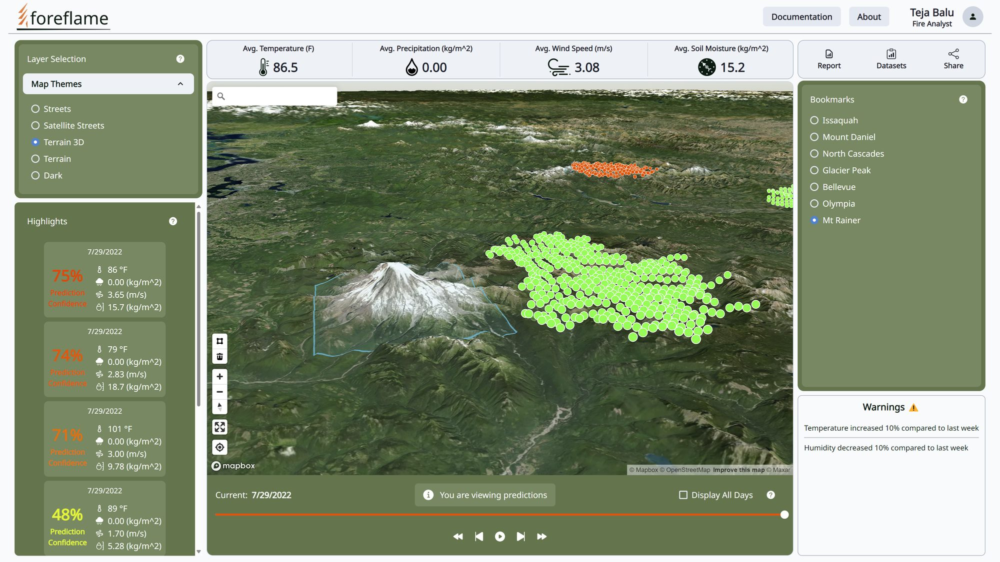

Turning wildfiredata into decisions.
An ML-based wildfire occurrence prediction platform, built as my University of Washington capstone with Microsoft Research. I helped shape the product, translate research needs into scope, and build the MVP with a cross-functional team.

Wildfire risk lives in data few people can read.
Predicting where wildfires are likely to occur means working over big, fast-moving data, satellite data included. The research was promising. The open question was how to turn it into something the people responsible for wildfire response could actually use.
From interviews to a working MVP.
- Ran user research with emergency management at the Washington State Department of Natural Resources.
- Built Figma wireframes and a medium-fidelity prototype so the team could react to something concrete before building it.
- Negotiated scope with stakeholders to ship user-facing features: 3D mapping, bookmarking of wildfire-prone areas, and enhanced data visualization.
- Led development of the ML-based MVP for wildfire occurrence prediction alongside UX designers, front-end, and ML engineers.
- Engineered a real-time data pipeline that optimized satellite data processing, improving map load times and the overall experience.
How it came together.
Listening to emergency management
Figma wireframes to mid-fidelity
The features stakeholders agreed to ship
ML prediction on a real-time pipeline
Recognized beyond the classroom.
Finalist in the Alaska Environmental Innovation Challenge, and in the Dempsey Startup Competition investment round.